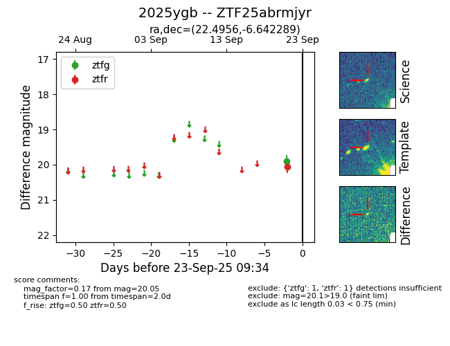

FINK: ZTF25abrmjyr
Lasair: ZTF25abrmjyr
ALeRCE: ZTF25abrmjyr
TNS: 2025ygb
YSE: 2025ygb
ZTF25abrmjyr (ztf,fink)
2025ygb (tns,yse)
equatorial (ra, dec) = (22.4956,-6.64229)
galactic (l, b) = (148.7549,-67.56081)

last ztfg=19.90, ztfr=20.05
1 ztfg, 1 ztfr detections